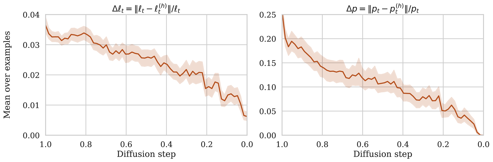
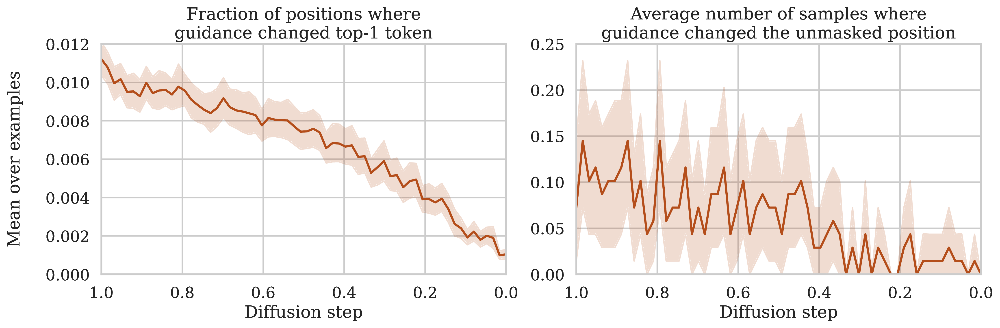
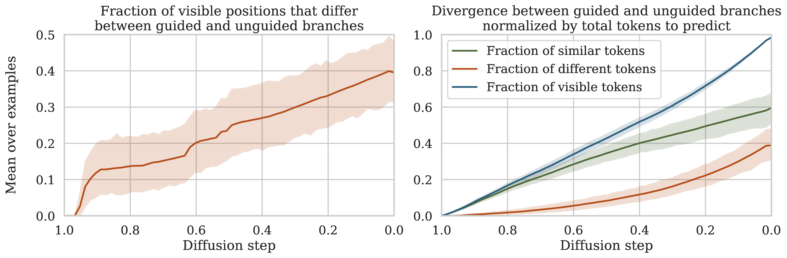

Diffusion language models generate text differently from autoregressive models: rather than writing left to right, they start from a fully masked sequence and progressively reveal tokens over many steps. This gives them a unique capability — every position is predicted simultaneously, so the model can "see the whole picture" at any point during generation, enabling guidance mechanisms that are simply unavailable to autoregressive models.
We exploit this flexibility with speculative self-guidance, a method that makes diffusion LMs second-guess themselves. At each denoising step, we identify the positions where the model sees an alternative trajectory which is likely plausible-but-wrong and temporarily fill them in with that wrong token to construct a "hallucinated" branch of the current trajectory. We then do one extra forward pass on this alternative to get a contrastive signal, which we use to steer the model's distribution away from it via a simple linear combination in logit space.
No training. No external model. No changes to the weights. Just one extra forward pass per step.
We tested on two state-of-the-art diffusion LMs (LLaDA-8B and Dream-7B) across science reasoning (GPQA), code generation (HumanEval), and math (GSM8K), and speculative self-guidance consistently improves accuracy across all six (model, benchmark) pairs. A single fixed hyperparameter configuration works robustly across tasks without per-task tuning.
Speculative self-guidance consistently improves over unguided baselines on all (model, benchmark) combinations. A single fixed configuration ($(w, k_h) = (0.1, 18)$) already yields strong gains across all tasks; per-task tuning can push further.
| Model | Benchmark | Baseline | $(w, k_h) = (0.1, 18)$ | Best per task | |||
|---|---|---|---|---|---|---|---|
| Guided | $\Delta$ | $(w, k_h)$ | Guided | $\Delta$ | |||
| LLaDA-8B | GPQA | .293 | .328 | +12.1% | (0.10, 18) | .328 | +12.1% |
| HumanEval | .445 | .488 | +9.6% | (0.05, 12) | .494 | +11.0% | |
| GSM8K | .613 | .626 | +2.1% | (0.10, 24) | .637 | +3.8% | |
| Dream-7B | GPQA | .298 | .349 | +17.0% | (0.10, 18) | .349 | +17.0% |
| HumanEval | .317 | .323 | +1.9% | (0.20, 24) | .390 | +23.0% | |
| GSM8K | .365 | .398 | +8.9% | (0.15, 24) | .429 | +17.4% | |
At each denoising step the model produces logits over all masked positions simultaneously. We compute a branchability score for each position — $S_i = p_{i,2}(1 - p_{i,2}/p_{i,1})$ — that balances plausibility (the second-best token should be likely enough to be a credible alternative) and uncertainty (the gap between the top two predictions should be small). We select the top-$k$ masked positions by this score and fill them with their second-most-likely token, constructing a hallucinated sequence that represents a plausible-but-wrong branch of the current trajectory. Running one extra forward pass on this branch yields hallucinated logits, and we steer the original logits away via $\ell \leftarrow (1+w)\,\ell - w\,\ell^{(h)}$. The hallucination budget $k$ decays linearly with diffusion time, naturally concentrating guidance where uncertainty is highest.
Speculative Self-Guidance overview. (1) A partially unmasked sequence at an intermediate denoising step is fed through the model $M$, yielding logits $\ell$. (2) The branchability score $S_i = p_{i,2}(1 - p_{i,2}/p_{i,1})$ is computed for each masked position; high-scoring positions (strong purple) represent the most uncertain and consequential decisions. (3–4) The top-$k$ positions by score are filled with their second-most-likely token, constructing a hallucinated sequence $x^{(h)}$. (5) A second forward pass on $x^{(h)}$ produces hallucinated logits $\ell^{(h)}$. (6) The two sets of logits are combined via $\ell \leftarrow (1+w)\,\ell - w\,\ell^{(h)}$, penalising tokens the hallucinated branch endorses and boosting tokens it does not. (7) Tokens are sampled from the guided logits to produce the next denoising step.
Examples loading…
Even with a deliberately small guidance strength $w$, the induced shift in token probabilities is substantial — 15–25% at early denoising steps — because the softmax amplifies small logit differences nonlinearly, especially when two candidate tokens are nearly tied. This confirms that a modest $w$ is both sufficient and appropriate: it meaningfully reshapes the distribution without destabilizing it.

Guidance doesn't merely shift probability mass among low-ranked tokens — it changes which token is predicted top-1 for a non-trivial fraction of masked positions. Crucially, these flipped positions disproportionately coincide with the tokens that get committed at that step, meaning the correction propagates into subsequent predictions rather than dissipating at positions that stay masked.

Guided and unguided generations diverge on a meaningful fraction of committed tokens, yet agree on the large majority — guidance refines rather than replaces the base trajectory. This is by design: speculative self-guidance targets specific uncertain decisions rather than pushing generation onto an entirely different path, giving the method its balance between effectiveness and faithfulness to the base model.

We ablate three key design choices on LLaDA-8B $\times$ GPQA: the position selection rule (our branchability score $S_i = p_{i,2}(1 - p_{i,2}/p_{i,1})$ vs. alternatives including $\max p_{i,1}$, $\max p_{i,2}$, and the raw probability ratio), the guidance window (restricting guidance to a fraction of total denoising progress, finding that full-range guidance works best), and the hallucination count schedule (linear decay in $k$ vs. a constant budget, where linear decay wins by concentrating hallucinations at the noisier, more uncertain early steps). Full ablation tables are in the paper appendix.
@article{hazan2026ssg, title = {Speculative Self-Guidance for Diffusion Language Models}, author = {Itay Hazan and Lior Wolf}, journal = {arXiv preprint arXiv:XXXX.XXXXX}, year = {2026} }